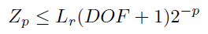

Collaborative Robots or Cobots are robots that can work alongside humans safely. Current non-collaborative industrial robots rely on complete separation from their human counterparts, requiring expensive perimeter fences. Collaborative robots can work right next to humans without any protective barriers. However, making a powerful industrial robot arm safe is a challenging task.
Standard industrial robots like ones made by Universal Robots, ABB, and Fanuc do not prevent collisions, and instead reduce the speed and power of robots so that a collision is not harmful with to the user. This is not ergonomic, and it restricts the productivity of human workers.
For collaborative robots, there is one important International Standards Organization Technical Specification (ISO-TS 15066) which defines a method called speed and separation monitoring (SSM). This method states a minimum separation distance S which if crossed, causes the robot to stop.
There are 4 factors which affect the separation distance:
Unfortunately, calculating a robot arm’s position and velocity requires complex algorithms with long computation times. However, fast reaction times enable robots to work within centimeters of workers instead of several meters. Our work targets this issue and identifies how these calculations can be made efficiently and in parallel on an FPGA.
We delivered 3 products as communicated to Intel on the Deliverables Proposal:
Intel's end goal is to provide robot manufacturers with a full suite of tools to implement safety-standard compliant Cobots. This includes the processing hardware (Intel FPGAs), IP core components, and libraries.
The mission for Collabor8 is to execute the initial step of this long-term project, which is to conduct extensive research for various methods as well as simulating potential solutions on virtual robotic arms.
I had two primary technical roles within this project:
Our ultimate technical goal was to simulate a robot that could perform a safety stop according to the ISO safety documents. To do this efficiently we split the team into two groups: one group focused on developing a function which takes the input angles and velocities of all of the robot joints, the position of the user, and outputs a flag when the robot needs to stop. The second group developed the simulation and integrated this function with a FANUC robot model.
I developed the function which stops the robot when the minimum distance threshold is exceeded. To do this the pose of the robot needs to be calculated by applying matrix transform for each link of the robot arm chain. Once the pose is found, the minimum distance needs to be calculated based on each link. This is done by modelling each link as a “capsule” and finding the minimum distance based geometric calculations. Finally the minimum separation distance can be found by using the kinematics of the robot’s stopping distance based on its current speed.
Secondly, I derived an upper bound on the robot’s position uncertainty. This is important as ISO-TS 15066 uses the position uncertainty in calculating the threshold distance. Moreover, Intel wants to implement this on an FPGA in which the numerical representation can dramatically affect computation time. The derived upper bound is as follows:
In which L_r is the length of the robot arm, the DOF is the number of degrees of freedom and p is the precision used on computation.